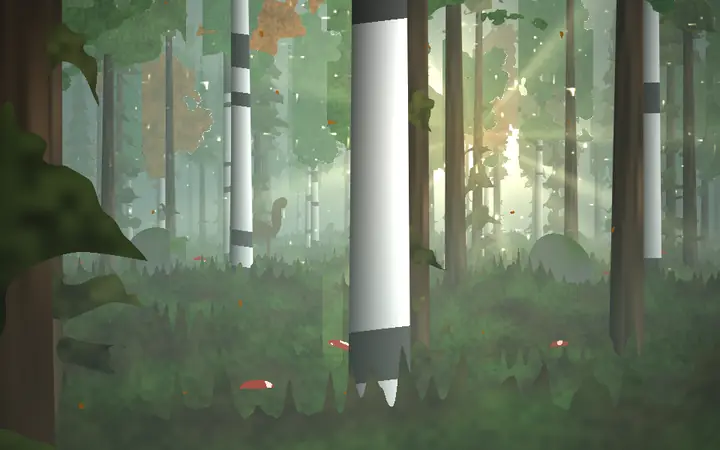
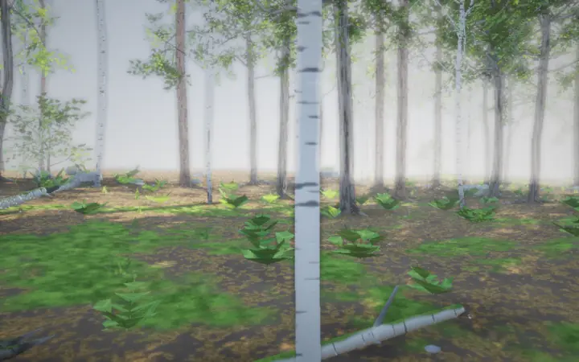
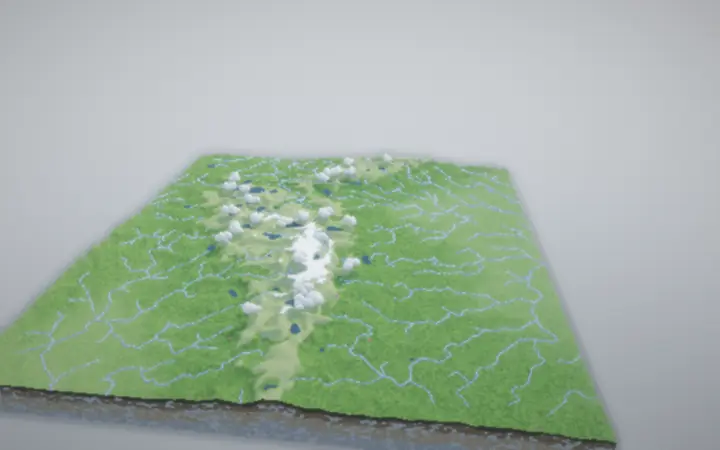

Orders of Magnitudeone forest, five sizes
Each rung gets ten times more room than the one before, and has to fit in it whole. There are no pictures or 3D models inside, only rules. At the top there are also measurements of the real Earth. Smallest first:
What’s happening… how each one was squeezed or stuffed ↗ Open ↗
Open ↗
0.2 kB One formula
Eighty firs fading into mist, from one loop. Each tree’s size, height and paleness come from its number in the line.
99.0% full · 198 of 200 bytes, about a text message and a half
<canvas id=c width=900 height=500><svg onload="for(q=c.getContext`2d`,i=0;i<80;i++)for(q.fillStyle=`hsl(120,15%,${90-i}%)`,j=28;j--;)q.fillRect(i*i*7%900-(w=(j%4+j/4)*(s=i*i/500))/2,240-i+j*s,w,s)">
Open ↗2 kB One shader
Every pixel works out which tree it falls on. Ten rows of conifers, birches and oaks, sun shafts with dust in them, leaves falling, and now and then a deer.
83.5% full · 1,670 of 2,000 bytes, about a page of a paperback
Try
- Just watch. It drifts sideways forever, and the deer is in no hurry.

Open ↗20 kB A genome and a grammar
Real 3D. Trees grown branch by branch from a genome, with moss where the rain runs, shadows, fog, wind and birdsong.
99.8% full · 19,960 of 20,000 bytes, a short story
Try
- Switch forests, then Reseed for a new one. No two are the same.
 Open ↗
Open ↗
200 kB The whole world, seen coarser
Everything the top rung does: every animal, every age, every scale. Only the Earth is blurrier, measured in 300 km squares.
96.2% full · 192,492 of 200,000 bytes, a novella
Try
- Tap Fallen leaf on the scale at the right and fall 100,000 times smaller, a window at a time
- Places → Anywhere on Earth, then click where you grew up

Open ↗2 MB A world that keeps time and place
A forest where things happen to each other, from 640 km of mountains down to the mites on a leaf, grown on the real climate of anywhere you click.
87.2% full · 1,744,577 of 2,000,000 bytes, one photo from your phone
Try
- Tap Fallen leaf on the scale at the right and fall 100,000 times smaller, a window at a time
- Places → Anywhere on Earth, then click where you grew up
- Happenings → Wolves, then Time → Fast forward, and watch the seedlings come back
- Places → Another age, and stand among the coal swamps’ scale trees
Everything in it
- Lives
- Deer, wolves, foxes, hares, beavers and birds, each with hunger, an age and two inherited genes. Does fawn in spring, stags roar, wolves hunt, deer remember where the kills were.
- A wood that changes
- Trees grow, age, fall and burn. Lightning fires run on the wind and stop at water. Beavers drown a stand under their pond. Over centuries the trees evolve into new species, with a tree of life to prove it.
- Time
- Day and night, aurora, four seasons, storms. Rewind and fast forward. Nine other ages, from the first trees of the Devonian to mammoths and the wildwood.
- Places
- Anywhere on Earth, from measured heights, months, rain and tree ranges. Ten forests, a kelp forest, under a lake, inside a limestone cave.
- Scales
- Mountain range, plot, rotting log, moss or under the bark, soil, the underside of a leaf: ten times smaller each step, each world seen through a window into the next.
- Look closer
- Walk it on foot, with animals that hear you coming. Double-click anything: leaf veins, single needles, lichens, dew at dawn, a ladybird or two.